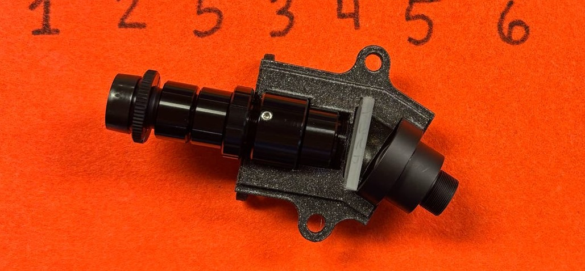
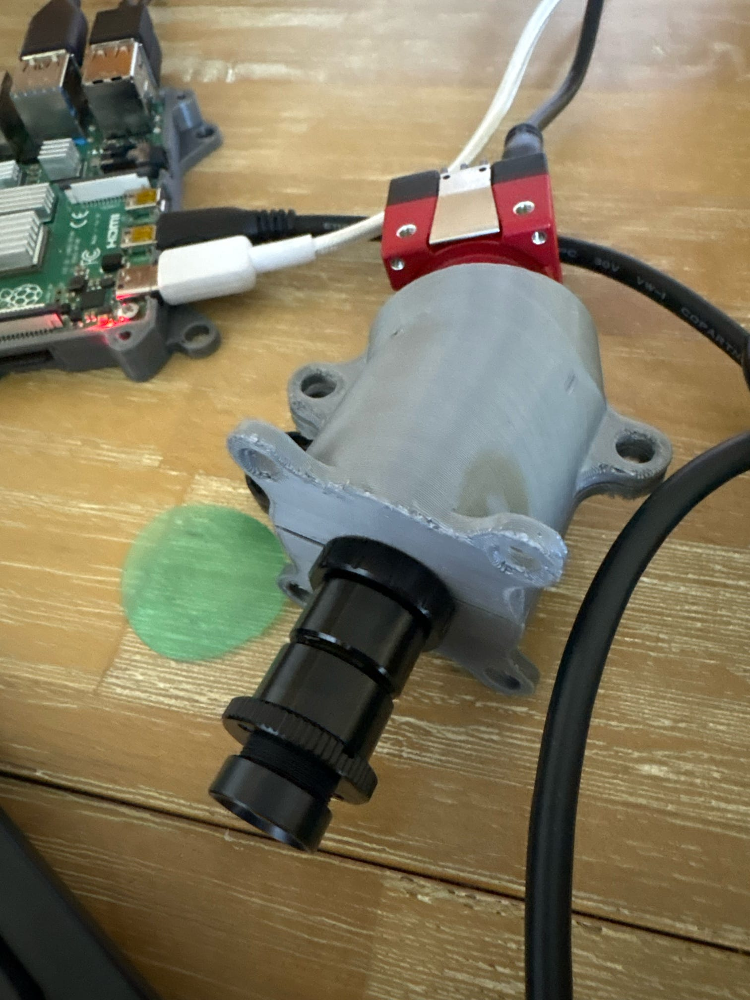
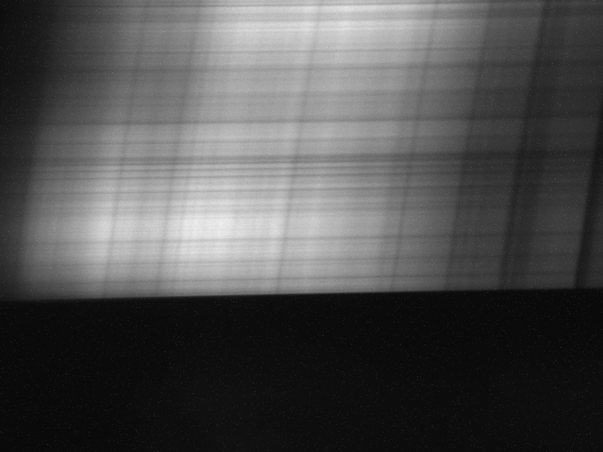

The main build for this spectrometer was based off of "Do it yourself hyperspectral imager for handheld to airborne operations" by Sigernes et al. A couple of parts were swapped out but I used most of their suggested components and their 3D printed casing design. They flew their spectrometers on drones, but I wanted to test its capabilities in high-altitude sensing. It was powered with a Raspberry Pi and collecting data along with an ambient conditions sensor (written into the code) to see what altitude the equipment failed at. The payload also had GoPros to overlay the spectral data on a 3D model made with photogrammetry, but those were run separately.
I built this spectrometer in the University of Iowa's "The Iowa Idea at Great Heights:Iceland Solar Eclipse High-Altitude Ballooning Project" course in Spring/Summer of 2026. I worked with Anna Blobaum, Addison Judd, Sam Shuster, Aidan Esparza, Luca Engel, Mawuena Morgan, and Abigail Bielecki. This spectrometer was launched in Iceland to collect data.
All of the components for this instrument were ordered from Edmund Optics and the 3D printed casing was from the above paper.
Components:
- Front lens f/4 Focal Length (FL) 16mm (#83-107)
- M12 lock nut for μ-video lenses (#64-102)
- Precision air slit 25μm x 3mm (#38-558)
- Field lens FL = 10mm (#63-519)
- 3x S-Mount thin lends mounts (#63-943)
- S mount focus tube (#63-953)
- Collimator lens FL = 30mm (#63-523)
- 600 groves/mm transmission grating 25x25mm2 (#49-580)
- Detector lens f/2.5 FL = 25mm (#56-776)
- S-Mount brass spacer rings (#68-228)
- Camera: AV Alvium 1800 U-501m S-Mount (#19-551)